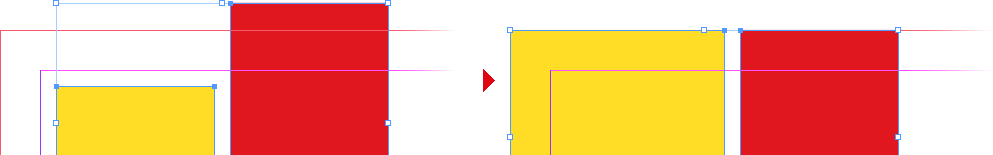
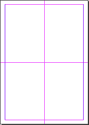
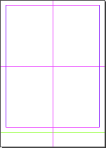
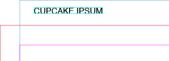

Indentz
This is a collection of InDesign scripts that I use to improve my DTP workflow, which often involves repetitive, tedious, or time-consuming operations. The scripts are not designed for long documents with flowing text, because I usually work with single-page documents. With few exceptions, these are simple scripts, with minimal interaction, and, apart from warnings, do their job silently. I use a series of keyboard shortcuts to run them (suggestions below). The code is tested in Adobe InDesign CC 2020–2024 on Mac.
I’m a graphic designer, not a programmer (I started doing this at the beginning of the Covid-19 pandemic), so be prepared for bugs and oversights (please create an issue if you encounter one, though!).
Preamble
Most scripts require at least one open document, and some require at least one object to be selected.
Data files: Several scripts get their input from external TSV files, first looking for a local one (in the current folder or the parent folder of the active document), then a default one (on the desktop, next to the running script, or in the Indentz root). They also match local files starting with _, which take precedence.
These TSV data files can have several non-standard features that will confuse Excel et al.:
- Blank lines are ignored; everything after a
#is ignored (comments); - The fields can be visually aligned with spaces that will be ignored at processing (I use VS Code with Rainbow CSV when creating/editing TSVs);
- A very long line can be broken into multiple lines with a backslash (
\) added at the end of each segment. - A line may also be a directive:
@includepathbase/path/– sets a base path for subsequent@includedirectives with relative paths; the path may be absolute or relative (if relative, it’s always to the data file folder);@includepath/to/another.tsv– includes another TSV file at this position; the path may be absolute or relative (if relative and abase/path/was not already defined, it also defaults to the data file folder);@defaults– includes the default data file (see above).
Visible area or Safety area: These are frames that I use to visually mark the visible part of a layout or its safety/type area; several scripts take them into account for some actions. The frames can be created manually (named <visible area> or <safety area>), or can be automatically generated from the document name or page margins (more details below). The Export section contains scripts that can show or hide these frames.
Libs: Many scripts use dynamically linked functions from lib/, which means that the folder structure should be preserved after downloading the repository. If you download releases, which are statically linked, you can use any script stand-alone[1].
The scripts
Align
Align objects with ease using the numeric keypad.
AlignTo*.jsx
Use the numeric keypad to align the selected objects, with a single keystroke, to the Align To setting (see ToggleAlignTo.jsx below).
Suggested shortcuts
| Left | Key | Center | Key | Right | Key |
|---|---|---|---|---|---|
| AlignToTL.jsx | Num7 |
AlignToT.jsx | Num8 |
AlignToTR.jsx | Num9 |
| AlignToL.jsx | Num4 |
AlignToC.jsx | Num5 |
AlignToR.jsx | Num6 |
| AlignToBL.jsx | Num1 |
AlignToB.jsx | Num2 |
AlignToBR.jsx | Num3 |
ToggleAlignTo.jsx
Toggles Align To between selection, margins, page, or spread (just run it repeatedly):

Suggested shortcut: Num0
ResetAlignTo.jsx
Resets Align To to default (Align to Selection).
Suggested shortcut: ⌃Num0
Cleanup
Defaults and cleanup.
DefaultPrefs.jsx
Sets some preferences for the active document. You should customize them to your workflow by editing the script (unfortunately the preferences are scattered in so many places that it’s difficult to guide you).
Note: Many scripts in this collection assume these settings as defaults because they suit my environment – e.g., is possible to try to scale a locked object (or guide) and the script will fail (see Prevent Selection of Locked Objects).
Click here for details
Application:
Preferences ‣ General: Prevent Selection of Locked Objects
Preferences ‣ Display Performance: Preserve Object-Level Display Settings
Preferences ‣ File Handling: Always Save Preview Images with Documents
View ‣ Screen Mode: Normal
View ‣ Grids & Guides: Snap to Guides; Smart Guides
Windows ‣ Layers: Ungroup Remembers Layers; Paste Remembers Layers
Windows ‣ Objects & Layout ‣ Transform: Reference Point: Center; Adjust Stroke Weight when Scaling; Adjust Effects when Scaling
Windows ‣ Output ‣ Preflight: Off
Document:
Adjust Layout: Off
Document Intent: Print
Rulers: Zero Point: Reset
Preferences ‣ Type: Use Typographer’s Quotes; Apply Leading to Entire Paragraphs
Preferences ‣ Units & Increments ‣ Keyboard Increments: Cursor Key: 0.2 mm; Size/Leading: 0.5 pt; Baseline Shift: 0.1 pt; Kerning/Tracking: 5/1000 em
Preferences ‣ Units & Increments ‣ Ruler Units: Origin: Spread; Units: Millimeters
Preferences ‣ Units & Increments ‣ Other Units: Stroke: Points
Preferences ‣ Grids: Baseline Grid Color: R=230 G=230 B=230
Preferences ‣ Guides & Pasteboard: Preview Background Color: Light Gray
Edit ‣ Transparency Blend Space: Document CMYK
View: Show Rulers
View ‣ Extras: Show Frame Edges
View ‣ Grids & Guides: Show Guides; Unlock Guides; Snap to Guides
Windows ‣ Color: Fill: None; Stroke: None
Windows ‣ Effects: Blending Mode: Normal; Opacity: 100%
Windows ‣ Output ‣ Attributes: Nonprinting: Off
Windows ‣ Pages: Allow Document Pages to Shuffle
Windows ‣ Text Wrap: No text wrap
Windows ‣ Type & Tables ‣ Paragraph: Shading: Off
DefaultLayers.jsx
Adds a set of layers defined in a 7-columns TSV data file named layers.tsv (sample):
| Name | Color | Visible | Printable | Locked | Order | Variants |
|---|---|---|---|---|---|---|
| .visible area | Yellow | yes | yes | yes | above | nicht sicht*, rahmen, sicht*, *vi?ib* |
| dielines | Magenta | yes | yes | yes | above | cut*, decoupe, die, die*cut, stanz* |
| text | Green | copy, headline*, hl, text*, txt, typ? | ||||
| artwork | Light Blue | no | yes | above | aw, design, element?, layout* | |
| bg | Red | below | back, *background*, bgg, fond, hg, hintergrund* | |||
| .reference | Black | no | no | yes | bottom | refer*, template, vorlage |
| … |
Legend:
- Name: Layer name;
- Color: Layer color (defaults to
Light Blue); - Visible:
yesorno(defaults toyes); - Printable:
yesorno(defaults toyes); - Locked:
yesorno(defaults toyes); - Order:
aboveorbelowexisting layers, ortop/bottom(defaults toabove); - Variants: A list of layers separated by commas that will be merged with the base layer; it’s case insensitive and can take simple wildcards (
?for exactly one character and*for zero or more characters).
Tip: The script will display a report if run while holding down the Ctrl key.
DefaultSwatches.jsx
Adds a set of swatches defined in a 5-columns TSV data file named swatches.tsv (sample):
| Name | Color Model | Color Space | Values | Variants |
|---|---|---|---|---|
| Rich Black | process | cmyk | 60 40 40 100 | |
| RGB Grey | process | rgb | 128 128 128 | |
| Cut | spot | cmyk | 0 100 0 0 | couper, die*cut |
| Visible area | spot | rgb | 255 180 0 | safe*area, vis*mark |
| … |
Legend:
- Name: Swatch name;
- Color Model:
processorspot(defaults toprocess); - Color Space:
cmyk,rgborlab(defaults tocmyk); - Values: a list of numbers separated by space (
,), pipe (|) or slash (/):- 3 values in 0–255 range for RGB;
- 4 values in 0–100 range for CMYK;
- 3 values in 0–100 (L), –128–127 (A and B) range for Lab.
- Variants: a list of swatches separated by commas that will be replaced by the base swatch; it’s case insensitive and can take simple wildcards (
?for exactly one character and*for zero or more characters).
Tip: The script will display a report if run while holding down the Ctrl key.
Tip: You can use DumpSwatches.jsx to save a tab delimited list of swatches from the active document.
ReplaceFonts.jsx
Replaces document fonts using a 4-columns TSV data file named fonts.tsv (sample):
| Old font family | Style | New font family | Style |
|---|---|---|---|
| Arial | Regular | Helvetica Neue | Regular |
| Arial | Bold | Helvetica Neue | Bold |
| … |
Tip: The script will display a report if run while holding down the Ctrl key.
Tip: You can use ShowFonts.jsx from Miscellaneous to get a tab delimited list of document fonts.
ReplaceLinks.jsx
Replaces document links using a 2-columns TSV data file named links.tsv (sample):
| Relink to | Links |
|---|---|
| /absolute/path/to/img1.psd | img1_lowres.jpg, img1-rgb.* |
| img2.psd | img2.* |
@includepath base/path/ |
|
| img3.psd | |
| subfolder/img4.psd | |
| … |
Legend:
- Relink to:
- An absolute path of the form
/absolute/path/to/img1.psd; - A relative path which is:
- relative by default to the document
Linksfolder (e.g.,img2.psd); - relative to the
base/path/defined by a previous@includepathdirective (e.g.,img3.psdandsubfolder/img4.psd).
- relative by default to the document
- An absolute path of the form
- Links: A list of file names separated by commas, that if present in the document, will be replaced with the link from the first column; it’s case insensitive and can take simple wildcards (
?for exactly one character and*for zero or more characters). The script will also automatically match the file names from the first column, so Links can be empty – e.g., ifimg4.psdappears in the document, it will be replaced by the one insubfolder/(which is actuallybase/path/subfolder/, because the@includepathabove it redefines the base path).
Note: If a file name contains commas you must quote it.
Tip: The script will display a report if run while holding down the Ctrl key.
Tip: You can use DumpLinks.jsx to save a list of links from the active document.
Suggested shortcut: ⌥F8
ReplaceSnippets.jsx
Replaces a list of text snippets using a 5-columns TSV data file named snippets.tsv (sample):
| Find what | Change to | Case sensitive | Whole word | Scope |
|---|---|---|---|---|
| English instructions | Deutsche anleitung | yes | yes | |
| The sample is for free | Das Sample ist kostenlos | yes | yes | _DE?$ |
| The sample is for free | L’échantillon est gratuit | yes | yes | _FR?$ |
| 12.06.22 | 13.11.2022 | |||
| … |
Legend:
- Find what: Text to be replaced (you can use special characters);
- Change to: The replacement text;
- Case sensitive:
yesorno(defaults toyes); - Whole word:
yesorno(defaults toyes); - Scope: Replacement will only be done if the document name matches the regular expression (case sensitive).
Example: ‘The sample is for free’ will be replaced with ‘Das Sample ist kostenlos’ in Document_DE.indd, and with ‘L’échantillon est gratuit’ in Document_FR.indd.
Tip: The script will display a report if run while holding down the Ctrl key.
Suggested shortcut: ⌥F6
BreakLinkToStyles.jsx
Unnaplies paragraph/character/object styles from the selected objects, or all objects in the document if nothing is selected.
Tip: The script will display a report if run while holding down the Ctrl key.
DocCleanup.jsx
Performs a sequence of actions designed to bring the document to an approximately ‘clean’ state:
- Sets some preferences (it runs
DefaultPrefs.jsx); - Unlocks all objects and resets their scaling to 100%;
- Deletes hidden objects (after confirmation);
- Deletes empty frames (after confirmation);
- Deletes unused swatches, layers and spreads;
- Converts empty text frames to generic frames;
- Converts empty frames to graphic frames;
- Resets default transparency effects;
- Resets the visible/printable/locked status of layers;
- Hides ‘invisible’ characters;
- Turns off URLs auto-updating;
- Sets the pasteboard margins.
Suggested shortcut: F2
RemoveScriptLabels.jsx
Sometimes objects that have a script label attached are reused, which may create problems later. The script deletes the labels of the selected objects, or all objects in the document if nothing is selected.
ResetLayers.jsx
Resets the visible/printable/locked state of the document layers using the same data file used by DefaultLayers.jsx.
SwatchesCleanup.jsx
Converts process RGB swatches to CMYK and renames them to ‘C= M= Y= K=’ format. It also deletes unused swatches and removes duplicates. Spot colors are not changed.
It contains code written by Marc Autret, Dave Saunders and others.
Suggested shortcut: ⇧F2
DumpLayers.jsx
Saves a TSV file (compatible with DefaultLayers.jsx) containing the names and properties of the active document layers.
DumpLinks.jsx
Saves a TSV file (compatible with ReplaceLinks.jsx) containing the links of the active document.
DumpSwatches.jsx
Saves a TSV file (compatible with DefaultSwatches.jsx) containing the names and properties of the active document swatches.
Export
Document export and related.
QuickExport.jsx
For a long time, I exported documents to PDF with Batch Convert, Peter Kahrel’s ‘Swiss army knife’, but I needed a tool tailored to my specific needs. My workflow requires frequent changes to export settings, and I wanted direct access to some of them (the native export dialog has quite a few tabs and options!). There are two selectable workflows, with the options grouped into several categories. I’m only reviewing the ones that aren’t self-explanatory:

![]()
Source folder: By default, all open documents will be exported. If nothing is open, this option allows you to select a folder as the source.
Workflow: Active workflow(s) and their labels. At least a workflow must be active.
Preset options: After selecting an Adobe PDF Preset you can easily override some of its options.
Document actions:
-
Skip do-not-print layers will not export layers with names beginning with a dot or a hyphen (e.g., .safety area); you can also define a custom list with Edit list.
-
Run a script will run a JavaScript or AppleScript before exporting – e.g., one of the other scripts from this section.
Output options:
-
Export in a custom folder: By default the files are exported in the same folder as the source document, but you can choose a custom one.
-
Add a suffix: This string will be appended to the name of the exported files.
Tip: A preset can be ‘paired’ with a suffix by adding it to its name after the last underscore – e.g., when you select the presetX4_350dpi_39L300_print, the suffix will be automatically changed toprint. -
Sort files into subfolders by suffix: Files will be exported in a subfolder named after the suffix, up to the first
+character – e.g., for a suffixprintthe PDF will be exported asprint/Document_print.pdf, and forprint+diecutasprint/Document_print+diecut.pdf. -
Sort files into subfolders by date: Files will be exported in a subfolder named
MM.DD(current month/day). -
Overwrite existing files: The files will be overwritten if the destination is the same. If unchecked, the files will get unique names by incrementing their index – for example, we’ll export as
Document_preview3.pdfif there is already aDocument_preview2.pdfin the export folder or its subfolders.
Source update:
-
Save modified documents: Will update source documents after export – e.g., if you want to preserve changes made by a script.
-
Use ‘Save as…’ to reduce size: This is useful for reducing the size of documents that have been modified many times (with each regular save the document grows with the latest changes).
Global options:
- Upgrade [Converted] documents: Will upgrade documents from previous versions of InDesign.
Tip: The settings are saved every time you run the script, but if you keep the Opt/Alt key pressed while clicking Start, they will not be updated for the current session.
Suggested shortcut: ⌃E
MarkSafetyArea.jsx
Creates a frame around the page margins that visually marks the safety area of a page. It’s a stroked frame named <safety area> on the .safety area layer. It will use an existing Safety area swatch, or will create one with the values R=0 G=180 B=255.
Tip: This script is designed to be run with QuickExport.jsx.
MarkVisibleArea.jsx
Creates a frame around the page margins that visually marks the visible area of a page. It’s a stroked frame named <visible area> on the .visible area layer. It will use an existing Visible area swatch, or will create one with the values R=255 G=180 B=0.
Tip: This script is designed to be run with QuickExport.jsx.
ShowDNPLayers.jsx / HideDNPLayers.jsx
Shows or hides all layers starting with either a dot or a hyphen, plus a hard-coded list of do-not-print layers:
- covered area*
- visible area, rahmen, sicht*, *vi?ib*
- safe*area, safe*margins, segmentation
- fold, falz
- guides, grid, masuratori
Tip: This script is designed to be run with QuickExport.jsx.
PrepareForExport.jsx
Hides all layers starting with either a dot or a hyphen, plus a hard-coded list of do-not-print layers (see above). Additionally, it moves all page objects from varnish, uv, foil, silver and white to separate spreads and labels the spreads.
Tip: This script is designed to be run with QuickExport.jsx.
File
File management.
FilesToSpreads.jsx
Combines the open documents, sorted alphabetically.
SpreadsToFiles.jsx
Saves each spread of the active document to a separate file.
If the document name ends with a separator (space/dot/underline/hyphen) followed by a sequence of digits or letters equal to the number of spreads, each saved spread will have the letter corresponding to its index appended to its name – e.g., a document with three spreads named Document_ABC.indd will be split into Document_A.indd, Document_B.indd and Document_C.indd. If a sequence is not autodetected, the script will prompt you for one.
Tip: By default the index will be appended at the end, but you can use a # in the document name to place the index at that particular position.
LayersToSpreads.jsx
Moves all layers of the active document to separate spreads (the document must have a single spread).
Fit
Reframe selected objects.
FitTo*.jsx
These scripts reframe the selected objects to the target area specified in the script name (page/spread or their margins, bleed, or visible area).
Example: Running FitToPageBleed.jsx with the following frames selected will extend the yellow one and will shrink the red one to the page bleed:

The reframing is done by:
-
Extending the edges that touch or are very close to a trigger zone (which is either the target or the visible area). By default this snap zone is 1% of the visible area[2];
-
Shrinking the edges that hang outside the target area.
Note: Rectangular frames and straight lines are simply reframed; rotated objects, ovals, groups etc., are first inserted into a clipping frame. Only clipped objects, straight frames and lines are extended. Frames with an embedded object are only extended to the limits of that object.
The *Forced.jsx variants simply reframe the objects to the target area.
Suggested shortcuts
| Page | Key | Spread | Key |
|---|---|---|---|
| FitToPage.jsx | F11 |
FitToSpread.jsx | F12 |
| FitToPageMargins.jsx | ⌥F11 |
FitToSpreadMargins.jsx | ⌥F12 |
| FitToPageVisibleArea.jsx | ⌥⇧F11 |
FitToSpreadVisibleArea.jsx | ⌥⇧F12 |
| FitToPageBleed.jsx | ⇧F11 |
FitToSpreadBleed.jsx | ⇧F12 |
| FitToPageForced.jsx | ⌘F11 |
FitToSpreadForced.jsx | ⌘F12 |
| FitToPageMarginsForced.jsx | ⌥⌘F11 |
FitToSpreadMarginsForced.jsx | ⌥⌘F12 |
| FitToPageVisibleAreaForced.jsx | ⌥⇧⌘F11 |
FitToSpreadVisibleAreaForced.jsx | ⌥⇧⌘F12 |
| FitToPageBleedForced.jsx | ⇧⌘F11 |
FitToSpreadBleedForced.jsx | ⇧⌘F12 |
Note: F11 page, F12 spread; ⌥ margins, ⌥⇧ visible area, ⇧ bleed; ⌘ forced.
TextAutosize.jsx
Auto-sizes the selected text frames to their content.
It’s designed to be run repeatedly. Each run increases the level with one step (from None to Height Only, from Height Only to Height and Width), except single lines, which are always set Height and Width. The reference point is set by the first paragraph’s alignment and the text frame’s vertical justification:
| Paragraph Alignment → ↓ Vertical Justification |
 |
 |
 |
|---|---|---|---|
 |
 |
 |
 |
 |
 |
 |
 |
 |
 |
 |
 |
Tip: A second run will preserve the current auto-sizing if you only change the alignment.
Suggested shortcut: F6
Layout
Document setup: page size, margins & columns, guides.
PageSizeFromFilename.jsx
Sets the size of the page, the margins and the bleed, getting the values from the document name. It also creates a frame around the page margins that visually marks the visible area of a page: a stroked frame named <visible area> on the .visible area layer; it will use an existing Visible area swatch, or will create one with the values R=255 G=180 B=0.
It works with file names structured like this:
<Name>_<Total size WxH>[_<Visible area WxH>][_<Bleed>].indd
WxH are pairs of numbers like 000x000 (where 000 means a group of at least one digit, followed or not by decimals, and optionally by mm or cm). The first pair found defines the size of the page. If a second pair is found, it defines the visible area. If a one- or two-digit sequence follows, it defines the bleed. The script is somewhat tolerant regarding spaces and extra stuff.
Example:
| File name | Total size | Visible area | Bleed |
|---|---|---|---|
| Document1_315x55.indd | 315×55 | – | – |
| Document2_1400x400_700x137mm.indd | 1400×400 | 700×137 | – |
| Document3_597x517_577x500.5_3mm V4.indd | 597×517 | 577×500.5 | 3 |
Note: Dimensions are always in millimeters.
Suggested shortcut: F3
PageSizeFromMargins.jsx
Resizes the current page to its margins.
PageSizeFromSelection.jsx
Resizes the current page to the selected objects.
Suggested shortcut: ⇧F3
PageMarginsFromSelection.jsx
Sets the current page margins from the selected objects.
Suggested shortcut: ⌥F3
PageMarginsFromScriptName.jsx
Sets the page margins and optionally a reserved area on the bottom, getting the values from the script name, in percentages of the visible area or page size:
 
It’s designed to be duplicated and renamed to customize the values, using one or two numbers separated by the HW keyword: the first number defines the page margins, the second one, if found, is the bottom area. HW can be omitted (meaning 0%), or used without a number (meaning the default 10%).
Example:
| Script name | Margins | Bottom area |
|---|---|---|
| MG4.jsx | 4% | – |
| MG5HW.jsx | 5% | 10% |
| MG5_HW10.jsx | 5% | 10% |
GuidesAdd.jsx
If any page objects are selected, we add guides around them.
If nothing is selected, guides are added to the page edges and the middle of the page margins. A second run deletes the guides.
Tip: If Opt is also pressed, we’ll use spread guides.
GuidesDelete.jsx
Deletes all guides from the document.
Proxy
Easily control the reference point used for transformations.
SetRefPoint*.jsx
Use the numeric keypad to set the reference point used for transformations (similar to clicking the little proxy squares in the Control palette):
Suggested shortcuts
| Left | Key | Center | Key | Right | Key |
|---|---|---|---|---|---|
| SetRefPointTL.jsx | ⌃Num7 |
SetRefPointT.jsx | ⌃Num8 |
SetRefPointTR.jsx | ⌃Num9 |
| SetRefPointL.jsx | ⌃Num4 |
SetRefPointC.jsx | ⌃Num5 |
SetRefPointR.jsx | ⌃Num6 |
| SetRefPointBL.jsx | ⌃Num1 |
SetRefPointB.jsx | ⌃Num2 |
SetRefPointBR.jsx | ⌃Num3 |
Scale
Resize selected objects.
ScaleTo*.jsx
Scale the selected objects to the target area specified in the script name (page size, page margins or spread bleed). Objects are scaled together, as a group.
*H.jsx and *W.jsx variants scale to the height or width of their target.
Suggested shortcuts
| Page | Key | Page margins | Key | Spread bleed | Key |
|---|---|---|---|---|---|
| ScaleToPageSize.jsx | F5 |
ScaleToPageMargins.jsx | ⌥F5 |
ScaleToSpreadBleed.jsx | ⇧F5 |
| ScaleToPageSizeH.jsx | ⌃F5 |
ScaleToPageMarginsH.jsx | ⌃⌥F5 |
ScaleToSpreadBleedH.jsx | ⌃⇧F5 |
View
Document display.
TileAll.jsx
Invokes Window ‣ Arrange ‣ Tile All Vertically, Tile All Horizontally, or Tile, depending on the current spread orientation.
Suggested shortcut: ⇧F4
ZoomTo300Percent.jsx
Zooms current layout window to 300%.
Suggested shortcut: ⌘3
ZoomToSelection.jsx
It resembles Fit Selection in Window (⌥⌘=), but:
- It brings the selection a little closer;
- If the cursor is in a text frame, zooms on the whole frame;
- Without anything selected zooms on the current spread.
Note: It’s really a hack and it works only when UI Sizing is set to Small.
Suggested shortcut: F4
ZoomToSpreads.jsx
Zooms on the first 3 spreads.
Suggested shortcut: ⌥F4
Miscellaneous
Clip.jsx
To handle some objects, it may be useful to temporarily insert them into a container (a clipping frame). The script inserts the selected objects into a clipping frame or, if already clipped, restores them.
Warning: It uses the clipboard, so make sure you don’t lose anything important.
Suggested shortcut: Num*
ClipUndo.jsx
Releases one or several objects from their clipping frames (see above). If nothing is selected, it will release all clipped objects from the current spread.
Suggested shortcut: ⌃Num*
EAN.jsx
This script is inspired by EAN Barcode Generator by Konstantin Smorodsky, that generates a document with barcodes from a list provided by the user. Occasionally, I work on flyers where I have dozens of barcodes to fill in, and I got tired of manually placing, scaling, and rotating each one, so I ‘borrowed’ the part that generates the barcode[3] and made this script to automate the operations.
You can enter a single code or a list (enter 8 or 13 digits for the code; if you have an add-on, add a hyphen and another 2 or 5 digits).
It has two modes of operation:
-
When nothing is selected, it creates a new document with a barcode on each page, like the original script.
-
When multiple objects are selected, the barcodes are inserted sequentially into them. If only one code is provided, all objects get it.
Suggested shortcut: ⌥F9
LabelPage.jsx
Adds a custom label on the current page slug, on the info layer (Helvetica Regular 6 pt, fill Registration, stroke Paper 0.4 pt).
Example:

LabelPageRatios.jsx
Adds on the slug of each page a label with the page size ratio, visible area ratio (if defined), and page margins ratio.
OffsetPaths.jsx
This is a slightly modified version of OffsetPath by Olav Martin Kvern, which uses a clever method to create paths around selected objects at a custom offset distance:
When you apply a Contour-type text wrap to an object, you’re creating a path around that object—and you can specify an offset distance. The text wrap path is accessible via scripting. That means that we could apply a text wrap with a given offset, then capture the path and path points of that path, turn off text wrap, and then create a new path from those geometric coordinates.
I fixed some bugs, added a default value, an option to join contours, and undo support.
QR.jsx
Adds a QR code on each spread of the active document (outside visible area, if possible), or to separate PDF files:
| On document | On file |
|---|---|
If the document name ends with a separator (space/dot/underline/hyphen) followed by a sequence of digits or letters equal to the number of spreads (a suffix), the letter corresponding to the spread index will be appended to each code/file.
Example: For a document with three spreads named Document_ABC.indd, the script will generate Document_A_QR.pdf, Document_B_QR.pdf and Document_C_QR.pdf.
Tip: You can use | for manually splitting the label into several lines.
Suggested shortcut: F9
QRBatch.jsx
Does the same thing as QR but in a non-interactive way: retrieves a list of codes from a TSV data file named qr.tsv (sample) and adds them to existing documents, or creates separate files (the suffix thingy applies here as well):
| File name | Code | On doc |
|---|---|---|
| Document 1 | Code 1 | + |
| Document 2_ABC | Code 2 | + |
| Document 3_AC | Code 3 | |
| … |
Legend:
- File name: document name;
- Code: any string;
- On doc: any string: on existing document; empty or missing: on separate file.
The TSV file must be saved locally (in the active document folder); files starting with _ take precedence.
Blank lines are ignored; everything after a # (comments) is ignored.
Tip: You can use | for manually splitting the label into several lines.
Suggested shortcut: ⇧F9
ShowFonts.jsx
Shows all fonts used in the active document.
ShowProfiles.jsx
Shows all color profiles available to InDesign.
ShowProperties.jsx
Shows properties and methods of a selected object for debugging purposes.
Inspired by showProps() by Gregor Fellenz and pub.inspect() from basil.js.
Suggested shortcut: F1
Install
- Clone or download from Code ‣ Download ZIP, or download the latest release.
- In InDesign open Window ‣ Utilities ‣ Scripts.
- Right-click on folder User and select Reveal in Finder/Explorer.
- Copy Indentz to this folder.
Acknowledgements
The code in this project would not have been possible without the InDesign ExtendScript API by Theunis de Jong and Gregor Fellenz, Mozilla’s MDN Web Docs, and also blog posts, forum posts, tutorials, or code samples by Marc Autret, Dave Saunders, Peter Kahrel, Gregor Fellenz, Marijan Tompa, Richard Harrington, Konstantin Smorodsky, Olav Martin Kvern and many others. Some scripts are not originally created by me; credit is given in these cases.
Special thanks to Adrian Frigioiu and others for bug reports and feedback.
License
© 2020-2024 Paul Chiorean <jpeg@basement.ro>.
The code is released under the MIT License.
Last updated: May 29, 2024
Releases may be a little old. The latest version is in the dev branch, which is what I actually use daily, so it’s kind of tested, but… beware. 😉 ↩︎
The value is configurable by editing the constant
SNAP_PCTfromfitTo(). ↩︎I ‘borrowed’ the barcode parsing bit, I refactored the function that generates the barcode to make it standalone, the rest of the code is original. ↩︎